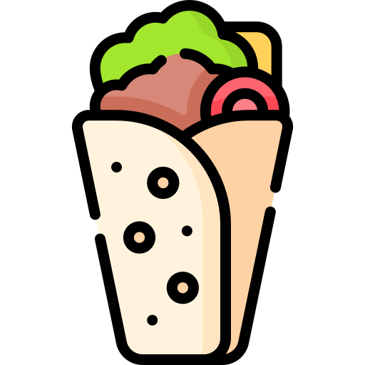

These are some of the best restaurants nearby. Use the map's top-left button to search for the locations!
Tea Break
Cozy spot for tea lovers and quick bites.

Famous Dish: Karak Tea
Al Zain
Delicious Arabic grills and mezze.
Famous Dish: Chicken/Beef Shawarma
Bosnian Hut
Authentic Balkan cuisine with a twist.
Famous Dish: Cevapi
Student Biryani
Affordable and delicious Desi biryani.
Famous Dish: Chicken Biryani
Sultan Bakery
Best pastries and baked goods in town.
Famous Dish: Arayes
Kulfilicious
A delightful spot for authentic Kulfi.
Famous Dish: Kulfi
The yellow markers on the map indicate the bus stop locations. Use the top-left button on the map to view the closest restaurants to each bus station!
Legend
 Fast food restaurants
Fast food restaurants Dessert shops
Dessert shops- Cozy cafes
-  Traditional Arab food
 Desi food
Desi food